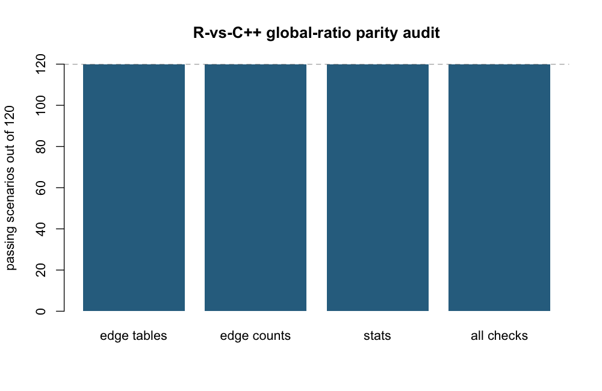
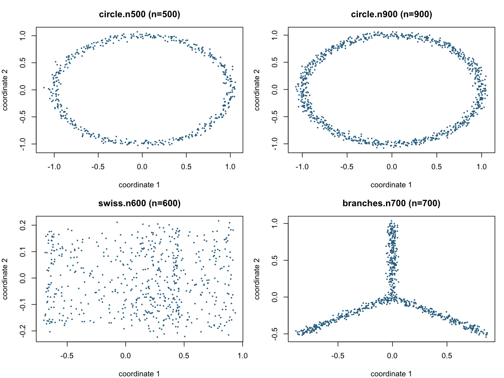
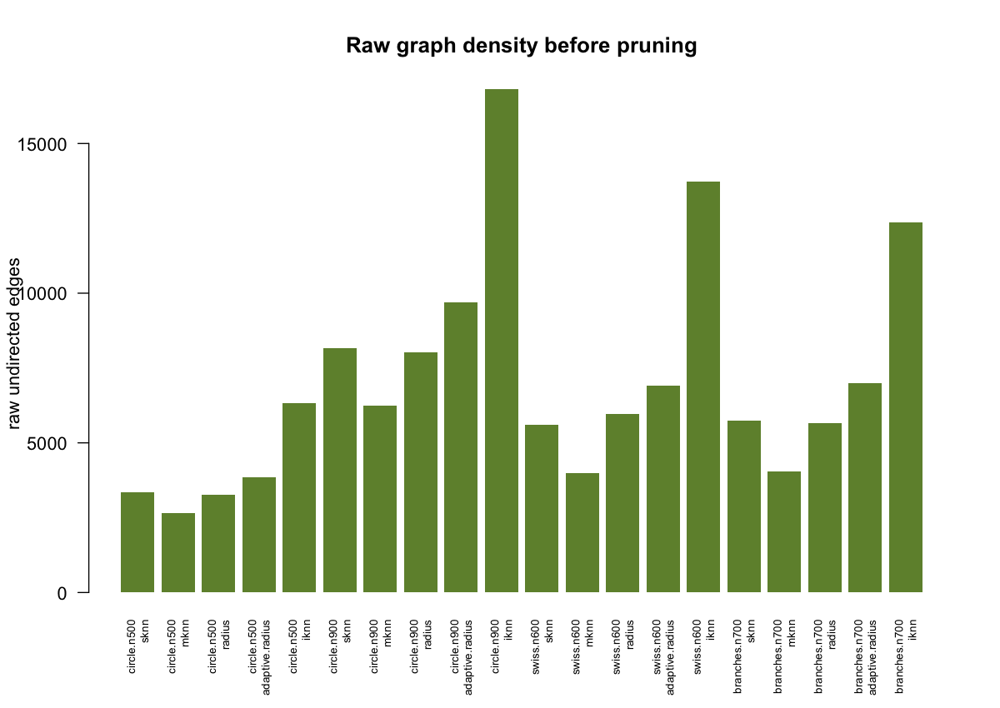
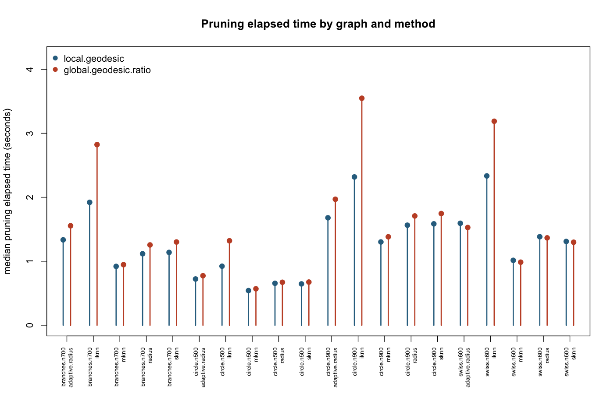
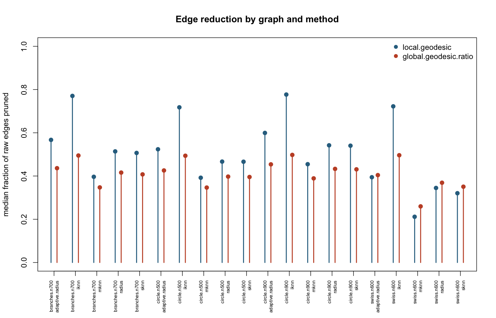
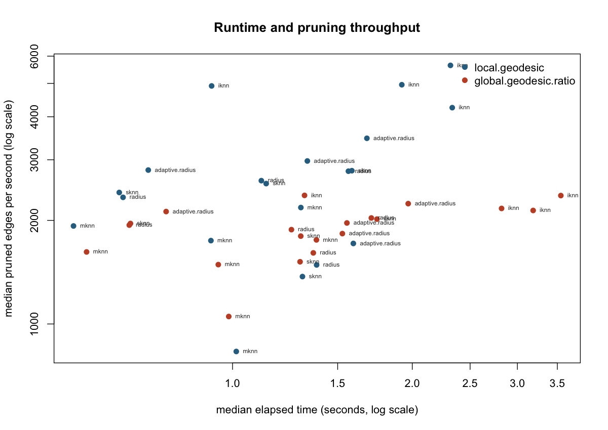

Generated on 2026-05-06 12:12:10.694713 from the local gflow repository.
global.geodesic.ratio pruning method added after the local C++ pruning work. It does two things: an R-vs-C++ parity audit against the previous R whole-graph implementation, and a medium synthetic benchmark comparing none, local.geodesic, and global.geodesic.ratio on the same raw graph inputs.
The parity audit generated small deterministic sKNN graphs and compared the old R helper .prune.graph.global.geodesic() to the new C++ helper behind .prune.graph.global.geodesic.ratio(). The audit varied random seed, ratio threshold, candidate edge percentile, and stats collection. For each scenario it compared final edge tables, pruning counts, and optional per-edge pruning statistics.
Parity outcome: 120 of 120 scenarios passed all checks.

The benchmark built raw graphs once per data case and graph family, then timed only the pruning dispatcher on those fixed adjacency and weight lists. This separates pruning cost from graph construction cost. Each pruning method was run twice per raw graph and summarized by the median elapsed time. The global-ratio settings were max.path.edge.ratio.deviation.thld = 0.1 and path.edge.ratio.percentile = 0.5; local pruning used prune.tau = 1.05.
The synthetic data cases were noisy circles, a simple Swiss roll projection, and a three-branch structure:

Raw edge count is the main context for interpreting pruning runtime. Denser graphs give the whole-graph ratio method more candidate alternatives to inspect and can also give local pruning more local paths to certify.

Across paired local/global cases, the median global-to-local runtime ratio was 1.08. Values vary by graph family and density, so the plot below is more informative than a single average.

The median global-minus-local edge reduction difference was -0.098. Positive values mean global-ratio removed a larger fraction of raw edges than local pruning on the same graph.

This figure combines elapsed time and pruning yield. Points farther upward remove more edges per second; points farther left finish faster. It is useful for seeing whether a method is merely more aggressive or actually efficient for a graph family.

| case | kind | n | k | family | method | median_elapsed_sec | min_elapsed_sec | max_elapsed_sec | edges_before | median_edges_after | median_pruned_edges | median_pruned_fraction | median_edges_per_sec | median_pruned_edges_per_sec |
|---|---|---|---|---|---|---|---|---|---|---|---|---|---|---|
| branches.n700 | three branches | 700 | 14 | adaptive.radius | none | 2.2175 | 2.2170 | 2.2180 | 7001 | 7001 | 0 | 0.000 | 3157 | 0 |
| branches.n700 | three branches | 700 | 14 | adaptive.radius | local.geodesic | 1.3345 | 1.3260 | 1.3430 | 7001 | 3030 | 3971 | 0.567 | 5246 | 2976 |
| branches.n700 | three branches | 700 | 14 | adaptive.radius | global.geodesic.ratio | 1.5545 | 1.5190 | 1.5900 | 7001 | 3947 | 3054 | 0.436 | 4506 | 1966 |
| branches.n700 | three branches | 700 | 14 | iknn | none | 4.0740 | 4.0040 | 4.1440 | 12352 | 12352 | 0 | 0.000 | 3033 | 0 |
| branches.n700 | three branches | 700 | 14 | iknn | local.geodesic | 1.9210 | 1.8920 | 1.9500 | 12352 | 2834 | 9518 | 0.771 | 6431 | 4956 |
| branches.n700 | three branches | 700 | 14 | iknn | global.geodesic.ratio | 2.8225 | 2.7700 | 2.8750 | 12352 | 6240 | 6112 | 0.495 | 4378 | 2166 |
| branches.n700 | three branches | 700 | 14 | mknn | none | 1.2890 | 1.2800 | 1.2980 | 4054 | 4054 | 0 | 0.000 | 3145 | 0 |
| branches.n700 | three branches | 700 | 14 | mknn | local.geodesic | 0.9200 | 0.9180 | 0.9220 | 4054 | 2447 | 1607 | 0.396 | 4407 | 1747 |
| branches.n700 | three branches | 700 | 14 | mknn | global.geodesic.ratio | 0.9465 | 0.9440 | 0.9490 | 4054 | 2646 | 1408 | 0.347 | 4283 | 1488 |
| branches.n700 | three branches | 700 | 14 | radius | none | 1.8105 | 1.7810 | 1.8400 | 5672 | 5672 | 0 | 0.000 | 3134 | 0 |
| branches.n700 | three branches | 700 | 14 | radius | local.geodesic | 1.1175 | 1.1090 | 1.1260 | 5672 | 2757 | 2915 | 0.514 | 5076 | 2609 |
| branches.n700 | three branches | 700 | 14 | radius | global.geodesic.ratio | 1.2550 | 1.2450 | 1.2650 | 5672 | 3313 | 2359 | 0.416 | 4520 | 1880 |
| branches.n700 | three branches | 700 | 14 | sknn | none | 1.8570 | 1.8390 | 1.8750 | 5746 | 5746 | 0 | 0.000 | 3095 | 0 |
| branches.n700 | three branches | 700 | 14 | sknn | local.geodesic | 1.1385 | 1.1320 | 1.1450 | 5746 | 2834 | 2912 | 0.507 | 5047 | 2558 |
| branches.n700 | three branches | 700 | 14 | sknn | global.geodesic.ratio | 1.3010 | 1.3010 | 1.3010 | 5746 | 3404 | 2342 | 0.408 | 4417 | 1800 |
| circle.n500 | noisy circle | 500 | 12 | adaptive.radius | none | 1.1350 | 1.1240 | 1.1460 | 3857 | 3857 | 0 | 0.000 | 3399 | 0 |
| circle.n500 | noisy circle | 500 | 12 | adaptive.radius | local.geodesic | 0.7225 | 0.6940 | 0.7510 | 3857 | 1837 | 2020 | 0.524 | 5347 | 2800 |
| circle.n500 | noisy circle | 500 | 12 | adaptive.radius | global.geodesic.ratio | 0.7740 | 0.7740 | 0.7740 | 3857 | 2215 | 1642 | 0.426 | 4983 | 2121 |
| circle.n500 | noisy circle | 500 | 12 | iknn | none | 1.9220 | 1.9170 | 1.9270 | 6318 | 6318 | 0 | 0.000 | 3287 | 0 |
| circle.n500 | noisy circle | 500 | 12 | iknn | local.geodesic | 0.9225 | 0.9160 | 0.9290 | 6318 | 1783 | 4535 | 0.718 | 6849 | 4916 |
| circle.n500 | noisy circle | 500 | 12 | iknn | global.geodesic.ratio | 1.3200 | 1.3160 | 1.3240 | 6318 | 3198 | 3120 | 0.494 | 4786 | 2364 |
| circle.n500 | noisy circle | 500 | 12 | mknn | none | 0.7560 | 0.7510 | 0.7610 | 2660 | 2660 | 0 | 0.000 | 3519 | 0 |
| circle.n500 | noisy circle | 500 | 12 | mknn | local.geodesic | 0.5415 | 0.5340 | 0.5490 | 2660 | 1617 | 1043 | 0.392 | 4913 | 1927 |
| circle.n500 | noisy circle | 500 | 12 | mknn | global.geodesic.ratio | 0.5695 | 0.5630 | 0.5760 | 2660 | 1738 | 922 | 0.347 | 4671 | 1619 |
| circle.n500 | noisy circle | 500 | 12 | radius | none | 0.9540 | 0.9540 | 0.9540 | 3274 | 3274 | 0 | 0.000 | 3432 | 0 |
| circle.n500 | noisy circle | 500 | 12 | radius | local.geodesic | 0.6555 | 0.6360 | 0.6750 | 3274 | 1746 | 1528 | 0.467 | 4999 | 2333 |
| circle.n500 | noisy circle | 500 | 12 | radius | global.geodesic.ratio | 0.6715 | 0.6710 | 0.6720 | 3274 | 1973 | 1301 | 0.397 | 4876 | 1937 |
| circle.n500 | noisy circle | 500 | 12 | sknn | none | 0.9890 | 0.9670 | 1.0110 | 3340 | 3340 | 0 | 0.000 | 3379 | 0 |
| circle.n500 | noisy circle | 500 | 12 | sknn | local.geodesic | 0.6460 | 0.6430 | 0.6490 | 3340 | 1783 | 1557 | 0.466 | 5170 | 2410 |
| circle.n500 | noisy circle | 500 | 12 | sknn | global.geodesic.ratio | 0.6745 | 0.6730 | 0.6760 | 3340 | 2019 | 1321 | 0.396 | 4952 | 1958 |
| circle.n900 | noisy circle | 900 | 16 | adaptive.radius | none | 2.9205 | 2.8890 | 2.9520 | 9702 | 9702 | 0 | 0.000 | 3322 | 0 |
| circle.n900 | noisy circle | 900 | 16 | adaptive.radius | local.geodesic | 1.6790 | 1.6650 | 1.6930 | 9702 | 3887 | 5815 | 0.599 | 5779 | 3464 |
| circle.n900 | noisy circle | 900 | 16 | adaptive.radius | global.geodesic.ratio | 1.9690 | 1.9510 | 1.9870 | 9702 | 5298 | 4404 | 0.454 | 4928 | 2237 |
| circle.n900 | noisy circle | 900 | 16 | iknn | none | 5.1705 | 5.1310 | 5.2100 | 16828 | 16828 | 0 | 0.000 | 3255 | 0 |
| circle.n900 | noisy circle | 900 | 16 | iknn | local.geodesic | 2.3175 | 2.3030 | 2.3320 | 16828 | 3755 | 13073 | 0.777 | 7262 | 5641 |
| circle.n900 | noisy circle | 900 | 16 | iknn | global.geodesic.ratio | 3.5475 | 3.5430 | 3.5520 | 16828 | 8453 | 8375 | 0.498 | 4744 | 2361 |
| circle.n900 | noisy circle | 900 | 16 | mknn | none | 1.9450 | 1.9330 | 1.9570 | 6232 | 6232 | 0 | 0.000 | 3204 | 0 |
| circle.n900 | noisy circle | 900 | 16 | mknn | local.geodesic | 1.3015 | 1.2630 | 1.3400 | 6232 | 3398 | 2834 | 0.455 | 4793 | 2179 |
| circle.n900 | noisy circle | 900 | 16 | mknn | global.geodesic.ratio | 1.3820 | 1.3630 | 1.4010 | 6232 | 3807 | 2425 | 0.389 | 4510 | 1755 |
| circle.n900 | noisy circle | 900 | 16 | radius | none | 2.5735 | 2.5590 | 2.5880 | 8016 | 8016 | 0 | 0.000 | 3115 | 0 |
| circle.n900 | noisy circle | 900 | 16 | radius | local.geodesic | 1.5635 | 1.5510 | 1.5760 | 8016 | 3671 | 4345 | 0.542 | 5127 | 2779 |
| circle.n900 | noisy circle | 900 | 16 | radius | global.geodesic.ratio | 1.7080 | 1.6900 | 1.7260 | 8016 | 4545 | 3471 | 0.433 | 4694 | 2032 |
| circle.n900 | noisy circle | 900 | 16 | sknn | none | 2.5640 | 2.5260 | 2.6020 | 8168 | 8168 | 0 | 0.000 | 3186 | 0 |
| circle.n900 | noisy circle | 900 | 16 | sknn | local.geodesic | 1.5845 | 1.5290 | 1.6400 | 8168 | 3755 | 4413 | 0.540 | 5161 | 2789 |
| circle.n900 | noisy circle | 900 | 16 | sknn | global.geodesic.ratio | 1.7455 | 1.7250 | 1.7660 | 8168 | 4648 | 3520 | 0.431 | 4680 | 2017 |
| swiss.n600 | swiss roll | 600 | 16 | adaptive.radius | none | 2.0865 | 2.0840 | 2.0890 | 6917 | 6917 | 0 | 0.000 | 3315 | 0 |
| swiss.n600 | swiss roll | 600 | 16 | adaptive.radius | local.geodesic | 1.5935 | 1.5400 | 1.6470 | 6917 | 4189 | 2728 | 0.394 | 4346 | 1714 |
| swiss.n600 | swiss roll | 600 | 16 | adaptive.radius | global.geodesic.ratio | 1.5275 | 1.5110 | 1.5440 | 6917 | 4121 | 2796 | 0.404 | 4529 | 1831 |
| swiss.n600 | swiss roll | 600 | 16 | iknn | none | 4.4755 | 4.3670 | 4.5840 | 13729 | 13729 | 0 | 0.000 | 3069 | 0 |
| swiss.n600 | swiss roll | 600 | 16 | iknn | local.geodesic | 2.3335 | 2.2930 | 2.3740 | 13729 | 3812 | 9917 | 0.722 | 5885 | 4251 |
| swiss.n600 | swiss roll | 600 | 16 | iknn | global.geodesic.ratio | 3.1880 | 3.1610 | 3.2150 | 13729 | 6917 | 6812 | 0.496 | 4307 | 2137 |
| swiss.n600 | swiss roll | 600 | 16 | mknn | none | 1.2035 | 1.1870 | 1.2200 | 3990 | 3990 | 0 | 0.000 | 3316 | 0 |
| swiss.n600 | swiss roll | 600 | 16 | mknn | local.geodesic | 1.0145 | 1.0060 | 1.0230 | 3990 | 3146 | 844 | 0.212 | 3933 | 832 |
| swiss.n600 | swiss roll | 600 | 16 | mknn | global.geodesic.ratio | 0.9855 | 0.9850 | 0.9860 | 3990 | 2954 | 1036 | 0.260 | 4049 | 1051 |
| swiss.n600 | swiss roll | 600 | 16 | radius | none | 1.8405 | 1.8230 | 1.8580 | 5954 | 5954 | 0 | 0.000 | 3235 | 0 |
| swiss.n600 | swiss roll | 600 | 16 | radius | local.geodesic | 1.3830 | 1.3740 | 1.3920 | 5954 | 3901 | 2053 | 0.345 | 4305 | 1485 |
| swiss.n600 | swiss roll | 600 | 16 | radius | global.geodesic.ratio | 1.3655 | 1.3540 | 1.3770 | 5954 | 3757 | 2197 | 0.369 | 4361 | 1609 |
| swiss.n600 | swiss roll | 600 | 16 | sknn | none | 1.7095 | 1.6930 | 1.7260 | 5610 | 5610 | 0 | 0.000 | 3282 | 0 |
| swiss.n600 | swiss roll | 600 | 16 | sknn | local.geodesic | 1.3095 | 1.2940 | 1.3250 | 5610 | 3812 | 1798 | 0.320 | 4285 | 1373 |
| swiss.n600 | swiss roll | 600 | 16 | sknn | global.geodesic.ratio | 1.2975 | 1.2790 | 1.3160 | 5610 | 3643 | 1967 | 0.351 | 4325 | 1516 |
raw_graphs.csv: raw graph sizes and build timings.benchmark_replicates.csv: all timing replicates.benchmark_summary.csv: median benchmark summaries used in this report.parity_audit.csv: R-vs-C++ parity scenarios and outcomes.This is a medium synthetic benchmark, not a claim about all production data. The useful outcome is comparative: the C++ global-ratio path has parity with the old R reference on the tested cases, and the report shows where it buys stronger pruning versus where it costs more runtime. If this method becomes a serious default candidate, the next benchmark should add downstream graph-geodesic fidelity metrics, not just pruning runtime and edge counts.